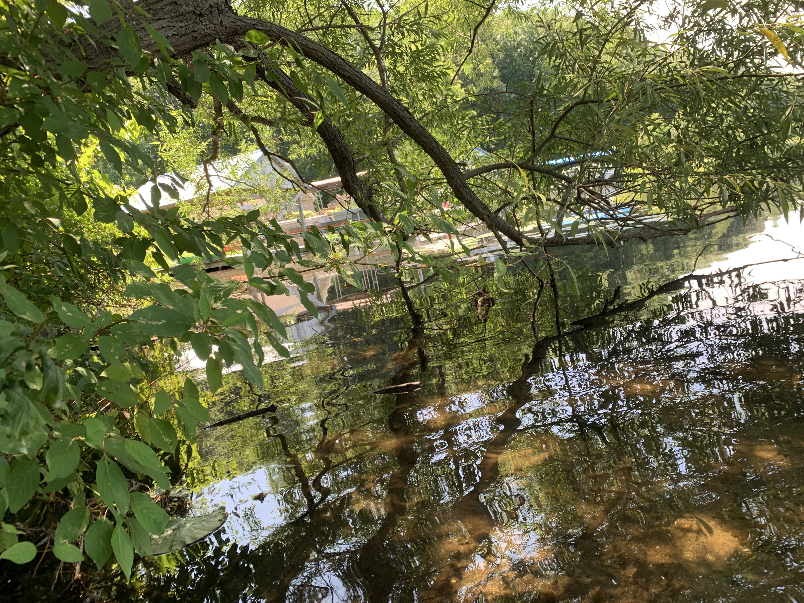
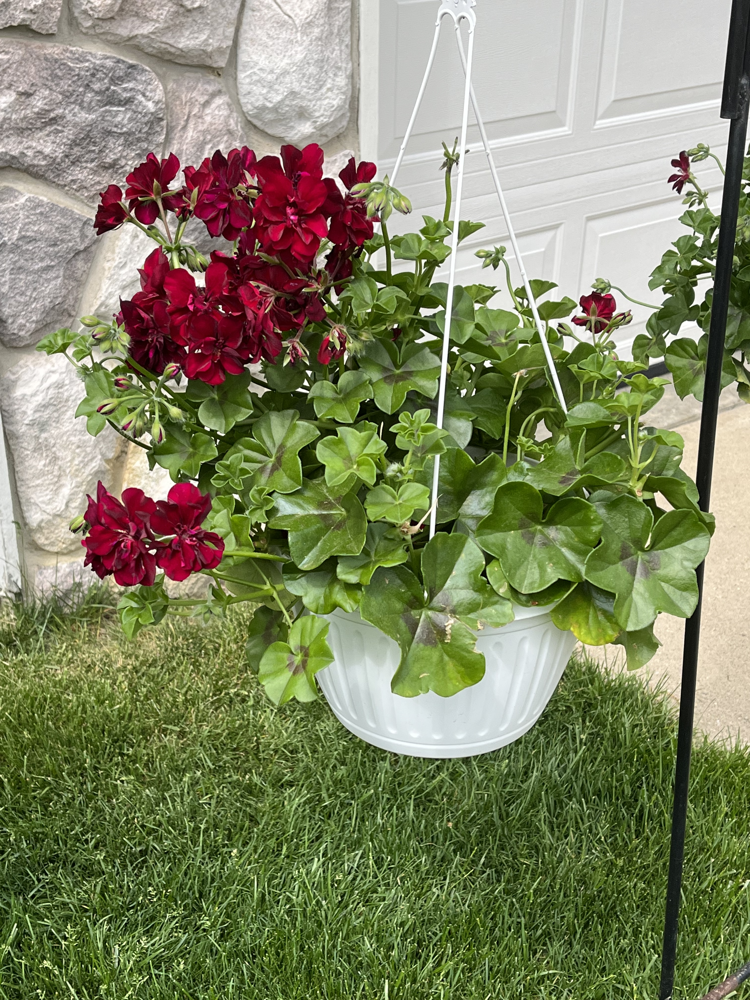
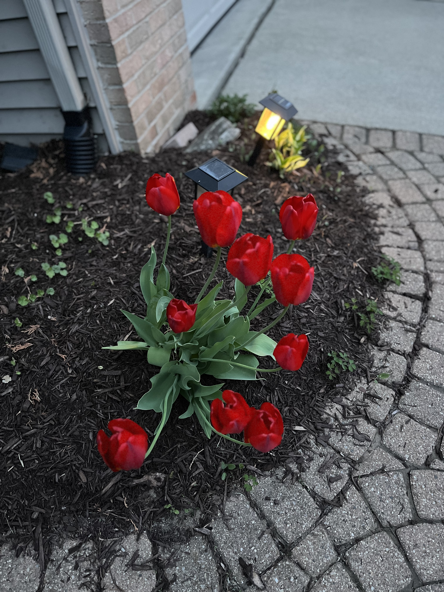

Spring Blossoms
Captured during an early morning walk along the botanical trail.
Click any photo—or navigate with the Tab key and press Enter—to open the accessible full-screen preview modal (Extra #3: Keyboard & Mouse Lightbox).
Captured during an early morning walk along the botanical trail.
Soft fog drifting across the water just after dawn.

Symmetrical reflection of shoreline trees under a clear sky.

Vibrant foliage arranged in a suspended garden basket.

Rich crimson leaves contrasting against the entryway.

Fresh spring tulips illuminated by warm afternoon sunlight.